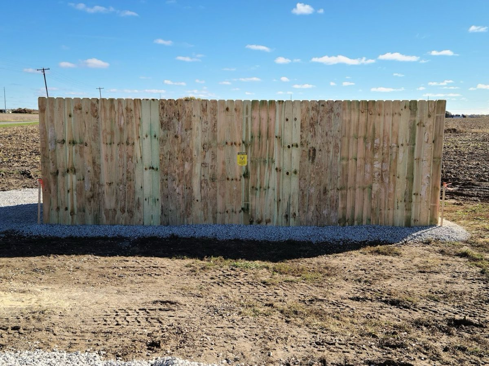

01 · Wood
Wood privacy & shadow box
Six-foot dog-eared privacy, shadow box and stick-built total privacy fence, set straight and close so the boards line up without gaps. This is the fence most customers call about, and the one Josh builds board by board.
- Privacy & shadow box
- Stick-built total privacy
- Matching walk and drive gates